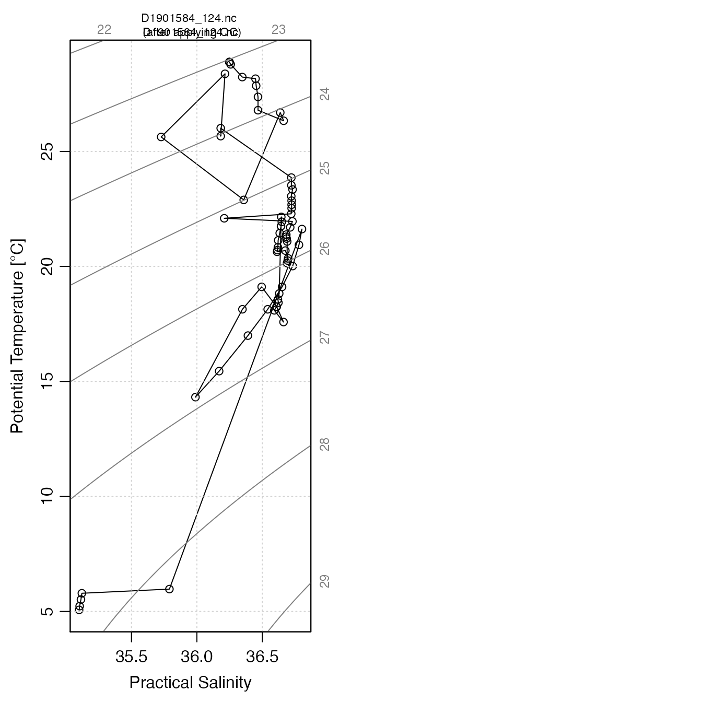

This works with either a vector of netCDF files,
or a argoFloats object of type "profiles", as
created by getProfiles().
During the reading, argo profile objects are created with oce::read.argo()
or a replacement function provided as the FUN argument.
readProfiles( profiles, FUN, destdir = argoDefaultDestdir(), quiet = FALSE, debug = 0 )
| profiles | either (1) a character vector that holds
the names of netcfd files or (2) an |
|---|---|
| FUN | a function that reads the netcdf files in which the argo
profiles are stored. If |
| destdir | character value indicating the directory in which to store
downloaded files. The default value is to compute this using
|
| quiet | logical value; use |
| debug | an integer specifying the level of debugging. If
this is zero, the work proceeds silently. If it is 1,
a small amount of debugging information is printed. Note that
|
An argoFloats object
with type="argos", in which the data slot
contains a list named argos that holds objects
that are created by oce::read.argo().
By default, warnings are issued about any
profiles in which 10 percent or more of the measurements are flagged
with a quality-control code of 0, 3, 4, 6, 7, or 9 (see the
applyQC() documentation for the meanings of these codes).
Dan Kelley
# Example 1: read 5 profiles and plot TS for the first, in raw and QC-cleaned forms. # \dontrun{ library(argoFloats) data(index) index1 <- subset(index, 1)#>#> | | | 0% | |======================================================================| 100%#> Warning: Of 1 profiles read, 1 has >10% of salinity values with QC flag of 4, signalling bad data. #> The indices of the bad profiles are as follows. #> 1#> Warning: Of 1 profiles read, 1 has >10% of temperature values with QC flag of 4, signalling bad data. #> The indices of the bad profiles are as follows. #> 1clean <- applyQC(raw) par(mfrow=c(1, 2)) file <- gsub(".*/", "", profiles[[1]]) aWithNA <- clean[[1]] oce::plotTS(raw[[1]], eos="unesco", type="o") mtext(file, cex=0.7*par("cex")) aWithoutNA <- raw[[1]] oce::plotTS(clean[[1]], eos="unesco", type="o")# } # Example 2: read from a URI # \dontrun{ u <- "ftp://usgodae.org/pub/outgoing/argo/dac/aoml/5903586/profiles/BD5903586_001.nc" p <- readProfiles(u)#> Warning: /Users/runner/work/_temp/argo-cache-dir/BD5903586_001.nc has no variable named 'PRES_QC'# }